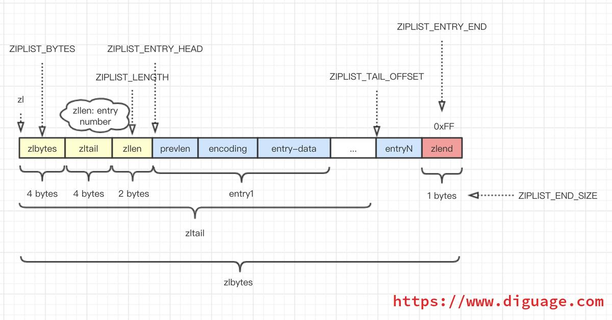
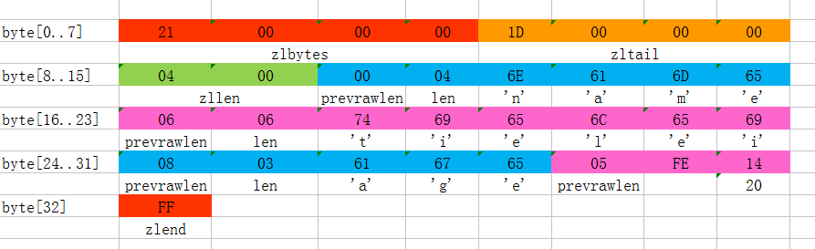
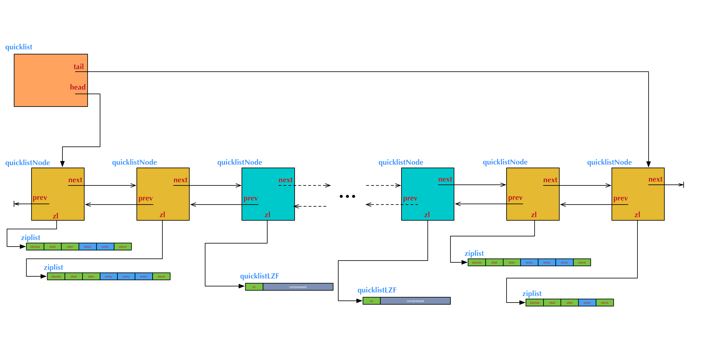
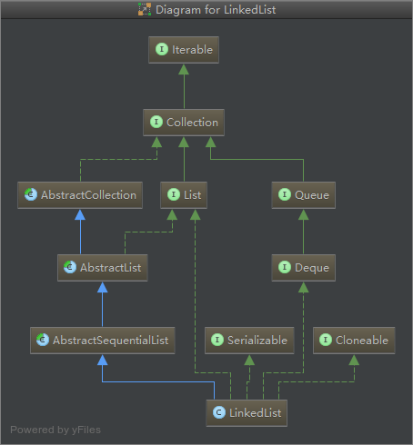
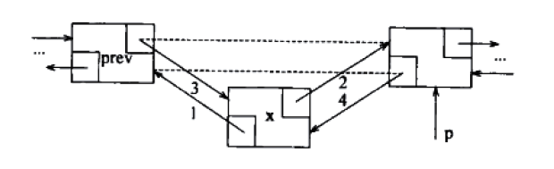

友情支持
如果您觉得这个笔记对您有所帮助，看在D瓜哥码这么多字的辛苦上，请友情支持一下，D瓜哥感激不尽，😜
|
|


有些打赏的朋友希望可以加个好友，欢迎关注D 瓜哥的微信公众号，这样就可以通过公众号的回复直接给我发信息。

公众号的微信号是: jikerizhi。因为众所周知的原因，有时图片加载不出来。 如果图片加载不出来可以直接通过搜索微信号来查找我的公众号。 |
9. LinkedList
LinkedList 底层使用的是 双向链表 数据结构（JDK1.6 之前为循环链表，JDK1.7 取消了循环。注意双向链表和双向循环链表的区别。）
9.2. 初始化
先看看 LinkedList 中内部属性和构造函数：
1
2
3
4
5
6
7
8
9
10
11
12
13
14
15
16
17
18
19
20
21
22
23
24
25
26
27
28
29
30
31
32
33
34
35
36
37
38
39
40
41
42
43
44
45
46
47
48
49
50
transient int size = 0;
/**
* Pointer to first node.
*/
transient Node<E> first;
/**
* Pointer to last node.
*/
transient Node<E> last;
/*
void dataStructureInvariants() {
assert (size == 0)
? (first == null && last == null)
: (first.prev == null && last.next == null);
}
*/
/**
* Constructs an empty list.
*/
public LinkedList() {
}
/**
* Constructs a list containing the elements of the specified
* collection, in the order they are returned by the collection's
* iterator.
*
* @param c the collection whose elements are to be placed into this list
* @throws NullPointerException if the specified collection is null
*/
public LinkedList(Collection<? extends E> c) {
this();
addAll(c);
}
private static class Node<E> {
E item;
Node<E> next;
Node<E> prev;
Node(Node<E> prev, E element, Node<E> next) {
this.item = element;
this.next = next;
this.prev = prev;
}
}
从这里一眼即可看出内部使用一个双向链表来保存数据。初始化工作也及其干净，什么也不干。另外一个构造函数后面再分析。
| D瓜哥觉得使用初始化的头尾节点更方便代码书写，少了很多繁琐的判断。 |
9.3. 分析工具
使用反射来获取内部属性，然后做进一步分析。
1
2
3
4
5
6
7
8
9
10
11
12
13
14
15
16
17
18
19
20
21
22
23
24
25
26
27
28
29
30
31
32
33
34
35
36
37
38
39
40
41
42
43
44
45
package com.diguage.truman;
import java.lang.reflect.Field;
import java.util.LinkedList;
import java.util.Objects;
/**
* @author D瓜哥, https://www.diguage.com/
* @since 2020-03-03 16:16
*/
public class LinkedListBaseTest {
/**
* 使用反射读取 LinkedList 内部属性
*/
public void xray(LinkedList<?> list) {
Class<? extends LinkedList> clazz = list.getClass();
try {
Field nodeField = clazz.getDeclaredField("first");
nodeField.setAccessible(true);
Object node = nodeField.get(list);
System.out.println("length=" + length(node) + ", size=" + list.size());
} catch (Throwable e) {
e.printStackTrace();
}
}
public int length(Object node) {
int result = 0;
if (Objects.isNull(node)) {
return result;
}
try {
Class<?> nodeClass = node.getClass();
Field nextField = nodeClass.getDeclaredField("next");
nextField.setAccessible(true);
while (Objects.nonNull(node)) {
node = nextField.get(node);
result++;
}
} catch (Throwable e) {
e.printStackTrace();
}
return result;
}
}
9.4. 添加元素
测试代码：
1
2
3
4
5
6
7
8
@Test
public void testAddAtTail() {
LinkedList<Integer> list = new LinkedList<>();
for (int i = 0; i < 16; i++) {
xray(list);
list.add(i);
}
}
JDK 源码：
1
2
3
4
5
6
7
8
9
10
11
12
13
14
15
16
17
18
19
20
21
22
23
24
25
26
27
/**
* Links e as last element.
*/
void linkLast(E e) {
final Node<E> l = last;
final Node<E> newNode = new Node<>(l, e, null);
last = newNode;
if (l == null)
first = newNode;
else
l.next = newNode;
size++;
modCount++;
}
/**
* Appends the specified element to the end of this list.
*
* <p>This method is equivalent to {@link #addLast}.
*
* @param e element to be appended to this list
* @return {@code true} (as specified by {@link Collection#add})
*/
public boolean add(E e) {
linkLast(e);
return true;
}
再来看看从头部插入元素：
1
2
3
4
5
6
7
8
@Test
public void testAddAtHeader() {
LinkedList<Integer> list = new LinkedList<>();
for (int i = 0; i < 16; i++) {
xray(list);
list.addFirst(i);
}
}
JDK 源码：
1
2
3
4
5
6
7
8
9
10
11
12
13
14
15
16
17
18
19
20
21
22
23
/**
* Links e as first element.
*/
private void linkFirst(E e) {
final Node<E> f = first;
final Node<E> newNode = new Node<>(null, e, f);
first = newNode;
if (f == null)
last = newNode;
else
f.prev = newNode;
size++;
modCount++;
}
/**
* Inserts the specified element at the beginning of this list.
*
* @param e the element to add
*/
public void addFirst(E e) {
linkFirst(e);
}
从这里就能看出，LinkedList 在 add(e)、addLast(e) 或者 addFirst(e) 时，都是对链表的首尾进行操作，会比较高效。
9.5. Redis 的 linkedlist
Redis 底层也有很多地方使用到 linkedlist，并且也是双向链表。
1
2
3
4
5
6
7
8
9
10
11
12
13
14
15
16
17
18
19
typedef struct listNode {
struct listNode prev;
struct listNode next;
void value;
} listNode;
typedef struct listIter {
listNode next;
int direction;
} listIter;
typedef struct list {
listNode head;
listNode tail;
void (dup)(void ptr);
void (free)(void ptr);
int (match)(void ptr, void key);
unsigned long len;
} list;
Redis 的 linkedlist 实现特点是：
-
双向：节点带有前后指针；
-
无环：首尾没有相连，所以没有构成环状；
-
链表保存了首尾指针；
-
多态：可以保存不同类型的值，这里成为泛型也许更符合 Java 中的语义。
Redis 在 2014 年实现了 quicklist，并使用 quicklist 代替了 linkedlist。所以，现在 linkedlist 几乎已经是废弃状态。
9.6. Redis 的 ziplist
Redis 官方在 ziplist.c 文件的注释中对 ziplist 进行了定义：
The ziplist is a specially encoded dually linked list that is designed to be very memory efficient. It stores both strings and integer values, where integers are encoded as actual integers instead of a series of characters. It allows push and pop operations on either side of the list in O(1) time. However, because every operation requires a reallocation of the memory used by the ziplist, the actual complexity is related to the amount of memory used by the ziplist.
就是说，ziplist 是一个经过特殊编码的双向链表，它的设计目标就是为了提高存储效率。ziplist 可以用于存储字符串或整数，其中整数是按真正的二进制表示进行编码的，而不是编码成字符串序列。它能以 O(1) 的时间复杂度在表的两端提供 push 和 pop 操作。
The general layout of the ziplist is as follows:
<zlbytes> <zltail> <zllen> <entry> <entry> ... <entry> <zlend>
NOTE: all fields are stored in little endian, if not specified otherwise.
-
<zlbytes>: 32bit，表示ziplist占用的字节总数（也包括<zlbytes>本身占用的4个字节）。 -
<zltail>: 32bit，表示ziplist表中最后一项（entry）在ziplist中的偏移字节数。<zltail>的存在，使得我们可以很方便地找到最后一项（不用遍历整个ziplist），从而可以在ziplist尾端快速地执行push或pop操作。 -
<zllen>: 16bit， 表示ziplist中数据项（entry）的个数。zllen字段因为只有16bit，所以可以表达的最大值为216-1。<zllen>等于16bit全为1的情况，那么<zllen>就不表示数据项个数了，这时要想知道 ziplist 中数据项总数，那么必须对ziplist从头到尾遍历各个数据项，才能计数出来。 -
<entry>: 表示真正存放数据的数据项，长度不定。一个数据项（entry）也有它自己的内部结构，这个稍后再解释。 -
<zlend>: ziplist 最后 1 个字节，是一个结束标记，值固定等于 255。
ziplist 将表中每一项存放在前后连续的地址空间内，一个ziplist整体占用一大块内存。它是一个表（list），但其实不是一个链表（linked list）。
ziplist 为了在细节上节省内存，对于值的存储采用了变长的编码方式。
每一个数据项<entry>的构成：
<prevlen> <encoding> <entry-data> (1)| 1 | <prevlen>: 表示前一个数据项占用的总字节数。
|
| 2 | <encoding>: 表示当前数据项的类型，整型或者字符串。 |
| 3 | <entry-data>: 数据 |
关于 <encoding> <entry-data> 的编码，直接引用官方文档：
The encoding field of the entry depends on the content of the entry. When the entry is a string, the first 2 bits of the encoding first byte will hold the type of encoding used to store the length of the string, followed by the actual length of the string. When the entry is an integer the first 2 bits are both set to 1. The following 2 bits are used to specify what kind of integer will be stored after this header. An overview of the different types and encodings is as follows. The first byte is always enough to determine the kind of entry.
|00pppppp| - 1 byte String value with length less than or equal to 63 bytes (6 bits). "pppppp" represents the unsigned 6 bit length. |01pppppp|qqqqqqqq| - 2 bytes String value with length less than or equal to 16383 bytes (14 bits). IMPORTANT: The 14 bit number is stored in big endian. |10000000|qqqqqqqq|rrrrrrrr|ssssssss|tttttttt| - 5 bytes String value with length greater than or equal to 16384 bytes. Only the 4 bytes following the first byte represents the length up to 32^2-1. The 6 lower bits of the first byte are not used and are set to zero. IMPORTANT: The 32 bit number is stored in big endian. |11000000| - 3 bytes Integer encoded as int16_t (2 bytes). |11010000| - 5 bytes Integer encoded as int32_t (4 bytes). |11100000| - 9 bytes Integer encoded as int64_t (8 bytes). |11110000| - 4 bytes Integer encoded as 24 bit signed (3 bytes). |11111110| - 2 bytes Integer encoded as 8 bit signed (1 byte). |1111xxxx| - (with xxxx between 0000 and 1101) immediate 4 bit integer. Unsigned integer from 0 to 12. The encoded value is actually from 1 to 13 because 0000 and 1111 can not be used, so 1 should be subtracted from the encoded 4 bit value to obtain the right value. |11111111| - End of ziplist special entry.
引用在网上找的例子，来做个说明：

-
这个ziplist一共包含 33 个字节。字节编号从
byte[0]到byte[32]。图中每个字节的值使用 16 进制表示。 -
头 4 个字节（
0x21000000）是按小端（little endian）模式存储的<zlbytes>字段。什么是小端呢？就是指数据的低字节保存在内存的低地址中（参见维基百科词条 Endianness）。因此，这里<zlbytes>的值应该解析成0x00000021，用十进制表示正好就是33。 -
接下来 4 个字节（
byte[4..7]）是<zltail>，用小端存储模式来解释，它的值是0x0000001D（值为29），表示最后一个数据项在byte[29]的位置（那个数据项为0x05FE14）。 -
再接下来 2 个字节（
byte[8..9]），值为0x0004，表示这个 ziplist 里一共存有4项数据。 -
接下来 6 个字节（
byte[10..15]）是第 1 个数据项。其中，prevlen=0，因为它前面没有数据项；len=4，相当于前面定义的9种情况中的第1种，表示后面4个字节按字符串存储数据，数据的值为：name。 -
接下来 8 个字节（
byte[16..23]）是第 2 个数据项，与前面数据项存储格式类似，存储 1 个字符串：tielei。 -
接下来 5 个字节（
byte[24..28]）是第 3 个数据项，与前面数据项存储格式类似，存储 1 个字符串：age。 -
接下来3个字节（
byte[29..31]）是最后一个数据项，它的格式与前面的数据项存储格式不太一样。其中，第 1 个字节prevlen=5，表示前一个数据项占用 5 个字节；第 2 个字节 =FE，相当于前面定义的9种情况中的第8种，所以后面还有1个字节用来表示真正的数据，并且以整数表示。它的值是20（0x14）。 -
最后1个字节（
byte[32]）表示<zlend>，是固定的值255（0xFF）。
有两个问题需要注意：
-
如何反向遍历 ziplist ？
<prevlen>: 表示前一个数据项占用的总字节数。那么就能找到前一个元素的起始位置，就能实现反向遍历。 -
如何从 ziplist 中添加/删除数据？删除数据后，对应位置的 Bits 位怎么处理？
在某个/某些节点的前面添加新节点之后， 程序必须沿着路径挨个检查后续的节点，是否满足新长度的编码要求， 直到遇到一个能满足要求的节点（如果有一个能满足，则这个节点之后的其他节点也满足）， 或者到达 ziplist 的末端 zlend 为止， 这种检查操作的复杂度为 O(N2) 。
因为只有在新添加节点的后面有连续多个长度接近 254 的节点时， 这种连锁更新才会发生， 所以可以普遍地认为， 这种连锁更新发生的概率非常小， 在一般情况下， 将添加操作看成是 O(N) 复杂度也是可以的。
删除元素就进行内存移位，覆盖 target 原本的数据，然后通过内存重分配，收缩多余空间。
Redis 在下面这个几个地方使用了 ziplist：
-
列表包含少量的列表项，并且列表项只是整数或者短小的字符串时。（在下面 quicklist 小节中，在最新版 Redis 中测试，显示的是 quicklist，而 quicklist 内部使用的是 ziplist 来存储数据，只是外面被 quicklist 包裹着。）
-
在哈希键值包含少量键值对，并且每个键值对只包含整数或短小字符串时。
1 2 3 4 5 6 7 8 9 10 11 12 13 14 15 16
$ redis-cli --raw 127.0.0.1:6379> HMSET site domain "https://www.diguage.com" owner "D瓜哥" OK 127.0.0.1:6379> HGET site domain https://www.diguage.com 127.0.0.1:6379> HGET site owner D瓜哥 127.0.0.1:6379> TYPE site hash 127.0.0.1:6379> OBJECT encoding site ziplist
9.7. quicklist
Redis 对外暴露的 list 数据类型，它底层实现所依赖的内部数据结构就是 quicklist。
list 是一个能维持数据项先后顺序的列表（各个数据项的先后顺序由插入位置决定），便于在表的两端追加和删除数据，而对于中间位置的存取具有 O(N) 的时间复杂度。
quicklist.c - A doubly linked list of ziplists
Redis 在 quicklist.c 就说明了，quicklist 是一个双向链表，而且是一个 ziplist 的双向链表。quicklist 的每个节点都是一个 ziplist。这样设计大概又是一个空间和时间的折中：
-
双向链表便于在表的两端进行
push和pop操作，但是它的内存开销比较大。首先，它在每个节点上除了要保存数据之外，还要额外保存两个指针；其次，双向链表的各个节点是单独的内存块，地址不连续，节点多了容易产生内存碎片。 -
ziplist 由于是一整块连续内存，所以存储效率很高。但是，它不利于修改操作，每次数据变动都会引发一次内存的
realloc。特别是当 ziplist 长度很长的时候，一次realloc可能会导致大批量的数据拷贝，进一步降低性能。
于是，结合了双向链表和 ziplist 的优点，quicklist 就应运而生了。
新问题：到底一个 quicklist 节点包含多长的 ziplist 合适呢？
-
每个quicklist节点上的ziplist越短，则内存碎片越多。
-
每个quicklist节点上的ziplist越长，则为ziplist分配大块连续内存空间的难度就越大。
Redis 提供了一个配置参数 list-max-ziplist-size 让使用者可以来根据自己的情况进行调整:
list-max-ziplist-size -2这个参数可正可负：
-
当取正值的时候，表示按照数据项个数来限定每个 quicklist 节点上的 ziplist 长度。
-
当取负值的时候，表示按照占用字节数来限定每个 quicklist 节点上的 ziplist 长度。这时，它只能取
-1到-5这五个值，每个值含义如下：-
-5: 每个 quicklist 节点上的 ziplist 大小不能超过 64 Kb。（注：1kb ⇒ 1024 bytes） -
-4: 每个 quicklist 节点上的 ziplist 大小不能超过 32 Kb。 -
-3: 每个 quicklist 节点上的 ziplist 大小不能超过 16 Kb。 -
-2: 每个 quicklist 节点上的 ziplist 大小不能超过 8 Kb。（-2是Redis给出的默认值） -
-1: 每个 quicklist 节点上的 ziplist 大小不能超过 4 Kb。
-
list的设计目标是能够用来存储很长的数据列表的。当列表很长的时候，最容易被访问的很可能是两端的数据，中间的数据被访问的频率比较低。list 还提供了一个选项，能够把中间的数据节点进行压缩，从而进一步节省内存空间。Redis 的配置参数 list-compress-depth 就是用来完成这个设置的。
list-compress-depth 0 // 0 是特殊值，表示都不压缩，默认值。这个参数表示一个quicklist两端不被压缩的节点个数。注：这里的节点个数是指quicklist双向链表的节点个数，而不是指ziplist里面的数据项个数。一个 quicklist 节点上的 ziplist，如果被压缩，就是整体被压缩的。
Redis 对于 quicklist 内部节点的压缩算法，采用的 LZF ——一种无损压缩算法。
1
2
3
4
5
6
7
8
9
10
11
12
13
14
15
16
17
18
19
20
21
22
23
24
25
26
27
28
29
30
31
32
33
34
35
36
37
38
39
40
41
42
43
44
45
46
47
48
49
50
51
52
53
54
55
56
57
58
59
60
61
62
63
64
65
66
67
68
69
70
71
72
73
74
75
76
77
78
79
80
81
82
/* Node, quicklist, and Iterator are the only data structures used currently. /
/ quicklistNode is a 32 byte struct describing a ziplist for a quicklist.
* We use bit fields keep the quicklistNode at 32 bytes.
* count: 16 bits, max 65536 (max zl bytes is 65k, so max count actually < 32k).
* encoding: 2 bits, RAW=1, LZF=2.
* container: 2 bits, NONE=1, ZIPLIST=2.
* recompress: 1 bit, bool, true if node is temporarry decompressed for usage.
* attempted_compress: 1 bit, boolean, used for verifying during testing.
* extra: 10 bits, free for future use; pads out the remainder of 32 bits /
typedef struct quicklistNode {
struct quicklistNode prev;
struct quicklistNode next;
unsigned char zl;
unsigned int sz; /* ziplist size in bytes /
unsigned int count : 16; / count of items in ziplist /
unsigned int encoding : 2; / RAW==1 or LZF==2 /
unsigned int container : 2; / NONE==1 or ZIPLIST==2 /
unsigned int recompress : 1; / was this node previous compressed? /
unsigned int attempted_compress : 1; / node can't compress; too small /
unsigned int extra : 10; / more bits to steal for future usage /
} quicklistNode;
/ quicklistLZF is a 4+N byte struct holding 'sz' followed by 'compressed'.
* 'sz' is byte length of 'compressed' field.
* 'compressed' is LZF data with total (compressed) length 'sz'
* NOTE: uncompressed length is stored in quicklistNode->sz.
* When quicklistNode->zl is compressed, node->zl points to a quicklistLZF /
typedef struct quicklistLZF {
unsigned int sz; / LZF size in bytes*/
char compressed[];
} quicklistLZF;
/* Bookmarks are padded with realloc at the end of of the quicklist struct.
* They should only be used for very big lists if thousands of nodes were the
* excess memory usage is negligible, and there's a real need to iterate on them
* in portions.
* When not used, they don't add any memory overhead, but when used and then
* deleted, some overhead remains (to avoid resonance).
* The number of bookmarks used should be kept to minimum since it also adds
* overhead on node deletion (searching for a bookmark to update). /
typedef struct quicklistBookmark {
quicklistNode node;
char name;
} quicklistBookmark;
/ quicklist is a 40 byte struct (on 64-bit systems) describing a quicklist.
* 'count' is the number of total entries.
* 'len' is the number of quicklist nodes.
* 'compress' is: -1 if compression disabled, otherwise it's the number
* of quicklistNodes to leave uncompressed at ends of quicklist.
* 'fill' is the user-requested (or default) fill factor.
* 'bookmakrs are an optional feature that is used by realloc this struct,
* so that they don't consume memory when not used. /
typedef struct quicklist {
quicklistNode head;
quicklistNode tail;
unsigned long count; / total count of all entries in all ziplists /
unsigned long len; / number of quicklistNodes /
int fill : QL_FILL_BITS; / fill factor for individual nodes /
unsigned int compress : QL_COMP_BITS; / depth of end nodes not to compress;0=off /
unsigned int bookmark_count: QL_BM_BITS;
quicklistBookmark bookmarks[];
} quicklist;
typedef struct quicklistIter {
const quicklist quicklist;
quicklistNode current;
unsigned char zi;
long offset; /* offset in current ziplist /
int direction;
} quicklistIter;
typedef struct quicklistEntry {
const quicklist quicklist;
quicklistNode node;
unsigned char zi;
unsigned char *value;
long long longval;
unsigned int sz;
int offset;
} quicklistEntry;

1
2
3
4
5
6
7
8
9
10
11
12
13
14
15
$ redis-cli --raw
127.0.0.1:6379> RPUSH names diguage "D瓜哥" "https://www.diguage.com/"
2
127.0.0.1:6379> LRANGE names 0 -1
diguage
D瓜哥
https://www.diguage.com/
127.0.0.1:6379> TYPE names
list
127.0.0.1:6379> OBJECT encoding names
quicklist
9.8. 参考资料
-
Redis 核心数据结构（一） - "地瓜哥"博客网 — 本文中的 Redis 内容是这篇文章的一个拷贝。请以原文为准备，本文尽量同步更新。
ArrayList更适合随机访问，而LinkedList更适合插入和删除。
-
对add(E e)方法的分析，可以得知LinkedList添加数据的效率高；
-
对remove(int index)方法的分析，可以了解到LinkedList删除数据的效率高；
-
对get(int index),set(int index, E element)方法的分析，可以看出LinkdedList查询的效率不高（需要定位，最差要遍历一半）；
核心数据结构通过内部类体现，Node就是实际的结点，存放了结点元素和前后结点的引用。
在1.7之前LinkedList是通过headerEntry实现的一个首尾相连的循环链表的。
从1.7开始，LinkedList是一个Node实现的非循环链表。
private static class Node<E> {
E item;
Node<E> next;
Node<E> prev;
Node(Node<E> prev, E element, Node<E> next) {
this.item = element;
this.next = next;
this.prev = prev;
}
}代码开始
package java.util;
import java.util.function.Consumer;9.9. 类的继承关系

继承自AbstractSequentialList，一个LinkedList抽象的实现； 重点关注实现了Deque接口。
public class LinkedList<E>
extends AbstractSequentialList<E>
implements List<E>, Deque<E>, Cloneable, java.io.Serializable
{9.10. 类的属性
//存储元素个数
transient int size = 0;
//存储头结点
transient Node<E> first;
//存储尾结点
transient Node<E> last;9.11. 类的构造器
//无参构造器
public LinkedList() {
}
//通过一个集合初始化LinkedList，元素顺序由这个集合的迭代器返回顺序决定
public LinkedList(Collection<? extends E> c) {
//调用无参构造器
this();
//添加元素
addAll(c);
}9.12. 类的方法
主要的方法的基础是link和unlink方法组,Node<E> node(int index)定位方法（均不是public）

//在指定节点前插入节点，节点succ不能为空
void linkBefore(E e, Node<E> succ) {
//获取succ的前结点
final Node<E> pred = succ.prev;
final Node<E> newNode = new Node<>(pred, e, succ);
succ.prev = newNode;
if (pred == null)//如果前结点为空
first = newNode;
else
pred.next = newNode;
size++;
modCount++;
}
//把对应参数作为第一个节点，内部使用
private void linkFirst(E e) {
//获取头结点
final Node<E> f = first;
//定义新结点
final Node<E> newNode = new Node<>(null, e, f);
first = newNode;
if (f == null)//头结点为null
// 赋值尾结点（结果只有一个元素）
last = newNode;
else
//把原来的首结点的引用指向这个新加的结点
f.prev = newNode;
size++;
modCount++;
//LinkedList也采用了“快速失败”的机制，通过记录modCount参数来实现。在面对并发的修改时，
//迭代器很快就会完全失败，而不是冒着在将来某个不确定时间发生任意不确定行为的风险。
}
//把对应参数作为尾节点（和前一个方法类似）
void linkLast(E e) {
// 获取尾结点，l为final类型，不可更改
final Node<E> l = last;
final Node<E> newNode = new Node<>(l, e, null);
last = newNode;
if (l == null)
first = newNode;
else
l.next = newNode;
size++;
modCount++;
}
//删除指定节点并返回被删除的元素值
E unlink(Node<E> x) {
// assert x != null;
final E element = x.item;
final Node<E> next = x.next;
final Node<E> prev = x.prev;
if (prev == null) {
first = next;
} else {
prev.next = next;
x.prev = null;
}
if (next == null) {
last = prev;
} else {
next.prev = prev;
x.next = null;
}
x.item = null;
size--;
modCount++;
return element;
}
//删除首节点并返回删除前首节点的值，内部使用
private E unlinkFirst(Node<E> f) {
// assert f == first && f != null;
final E element = f.item;
final Node<E> next = f.next;
f.item = null;
f.next = null; // help GC
first = next;
if (next == null)
last = null;
else
next.prev = null;
size--;
modCount++;
return element;
}
//删除尾节点并返回删除前尾节点的值，内部使用
private E unlinkLast(Node<E> l) {
// assert l == last && l != null;
final E element = l.item;
final Node<E> prev = l.prev;
l.item = null;
l.prev = null; // help GC
last = prev;
if (prev == null)
first = null;
else
prev.next = null;
size--;
modCount++;
return element;
}//获取第一个元素
public E getFirst() {
final Node<E> f = first;
if (f == null)
throw new NoSuchElementException();
return f.item;
}
//获取最后一个元素
public E getLast() {
final Node<E> l = last;
if (l == null)
throw new NoSuchElementException();
return l.item;
}
//删除第一个元素并返回删除的元素
public E removeFirst() {
final Node<E> f = first;
if (f == null)
throw new NoSuchElementException();
return unlinkFirst(f);
}
//删除最后一个元素并返回删除的值
public E removeLast() {
final Node<E> l = last;
if (l == null)
throw new NoSuchElementException();
return unlinkLast(l);
}
//添加元素作为第一个元素
public void addFirst(E e) {
linkFirst(e);
}
//添加元素作为最后一个元素
public void addLast(E e) {
linkLast(e);
}
//检查是否包含某个元素，返回bool
public boolean contains(Object o) {
return indexOf(o) != -1;
}
//返回列表长度
public int size() {
return size;
}
//添加一个元素，默认添加到末尾作为最后一个元素
public boolean add(E e) {
linkLast(e);
return true;
}
//删除指定元素，默认从first节点开始，删除第一次出现的那个元素（需要迭代）
public boolean remove(Object o) {
if (o == null) {
for (Node<E> x = first; x != null; x = x.next) {
if (x.item == null) {
unlink(x);
return true;
}
}
} else {
for (Node<E> x = first; x != null; x = x.next) {
if (o.equals(x.item)) {
unlink(x);
return true;
}
}
}
return false;
}
//添加指定集合的元素到列表，从最后开始添加
public boolean addAll(Collection<? extends E> c) {
//调用addAll(int index, Collection<? extends E> c)
return addAll(size, c);
}
//从指定位置往后追加，index和之后的元素向后顺延
public boolean addAll(int index, Collection<? extends E> c) {
checkPositionIndex(index);
//转化成数组
Object[] a = c.toArray();
int numNew = a.length;
if (numNew == 0)
return false;
Node<E> pred, succ;
if (index == size) {
succ = null;
pred = last;
} else {//如果不是从末尾开始添加，获取新加串的前后结点
succ = node(index);
pred = succ.prev;
}
//遍历数组并添加到列表中
for (Object o : a) {
@SuppressWarnings("unchecked") E e = (E) o;
Node<E> newNode = new Node<>(pred, e, null);
if (pred == null)
first = newNode;
else
pred.next = newNode;//如果存在前节点，前节点会向后指向新加的节点
pred = newNode;//新加的节点成为前一个节点
}
if (succ == null) {
last = pred;//如果是从最后开始添加的，则最后添加的节点成为尾节点
} else {
pred.next = succ;//如果不是从最后开始添加的，则最后添加的节点向后指向之前得到的后续第一个节点
succ.prev = pred;//后续的第一个节点也应改为向前指向最后一个添加的节点
}
size += numNew;
modCount++;
return true;
}
//清空表
public void clear() {
//方便gc回收垃圾
for (Node<E> x = first; x != null; ) {
Node<E> next = x.next;
x.item = null;
x.next = null;
x.prev = null;
x = next;
}
first = last = null;
size = 0;
modCount++;
}
//获取指定索引的节点的值
public E get(int index) {
checkElementIndex(index);
return node(index).item;
}
//修改指定索引的值并返回之前的值
public E set(int index, E element) {
checkElementIndex(index);
Node<E> x = node(index);
E oldVal = x.item;
//只是把item替换掉
x.item = element;
return oldVal;
}
//在指定位置后面添加元素
public void add(int index, E element) {
checkPositionIndex(index);
if (index == size)
linkLast(element);
else
linkBefore(element, node(index));
}
//删除指定位置的元素
public E remove(int index) {
checkElementIndex(index);
return unlink(node(index));
}
//检查索引是否超出范围（checkElementIndex调用），因为元素索引是0~size-1的，所以index必须满足0<=index<size
private boolean isElementIndex(int index) {
return index >= 0 && index < size;
}
//检查位置是否超出范围（checkPositionIndex调用），index必须在index~size之间（含），如果超出，返回false
private boolean isPositionIndex(int index) {
return index >= 0 && index <= size;
}
//异常详情
private String outOfBoundsMsg(int index) {
return "Index: "+index+", Size: "+size;
}
//检查元素索引是否超出范围（set,get,remove时检查），若已超出，就抛出异常
private void checkElementIndex(int index) {
if (!isElementIndex(index))
throw new IndexOutOfBoundsException(outOfBoundsMsg(index));
}
//检查位置是否超出范围（为添加和迭代检查使用），若已超出，就抛出异常
private void checkPositionIndex(int index) {
if (!isPositionIndex(index))
throw new IndexOutOfBoundsException(outOfBoundsMsg(index));
}
//获取指定位置的节点
//该方法返回双向链表中指定位置处的节点，而链表中是没有下标索引的，要指定位置出的元素，就要遍历该链表，从源码的实现中，我们看到这里有一个加速动作。
//源码中先将index与长度size的一半比较，如果index<size/2，就只从位置0往后遍历到位置index处，而如果index>size/2，就只从位置size往前遍历到位置index处。这样可以减少一部分不必要的遍历。
Node<E> node(int index) {
// assert isElementIndex(index);
if (index < (size >> 1)) {
Node<E> x = first;
for (int i = 0; i < index; i++)
x = x.next;
return x;
} else {
Node<E> x = last;
for (int i = size - 1; i > index; i--)
x = x.prev;
return x;
}
}
//获取第一个指定元素的索引位置并返回索引，不存在就返回-1
public int indexOf(Object o) {
int index = 0;
if (o == null) {
for (Node<E> x = first; x != null; x = x.next) {
if (x.item == null)
return index;
index++;
}
} else {
for (Node<E> x = first; x != null; x = x.next) {
if (o.equals(x.item))
return index;
index++;
}
}
return -1;
}
//获取最后一个指定元素索引的索引并返回索引，不存在就返回-1
public int lastIndexOf(Object o) {
int index = size;
if (o == null) {
for (Node<E> x = last; x != null; x = x.prev) {
index--;
if (x.item == null)
return index;
}
} else {
for (Node<E> x = last; x != null; x = x.prev) {
index--;
if (o.equals(x.item))
return index;
}
}
return -1;
}Queue操作
//提供普通队列和双端队列的功能，FIFO
//出队（从前端），获得第一个元素，不存在会返回null，不会删除元素（节点）
public E peek() {
final Node<E> f = first;
return (f == null) ? null : f.item;
}
//出队（从前端），不删除元素，若为null会抛出异常而不是返回null
public E element() {
return getFirst();
}
//出队（从前端），如果不存在会返回null，存在的话会返回值并移除这个元素（节点）
public E poll() {
final Node<E> f = first;
return (f == null) ? null : unlinkFirst(f);
}
//出队（从前端），如果不存在会抛出异常而不是返回null，存在的话会返回值并移除这个元素（节点）
public E remove() {
return removeFirst();
}
//入队（从后端），始终返回true
public boolean offer(E e) {
return add(e);
}Deque（双端队列）操作
//入队（从前端），始终返回true
public boolean offerFirst(E e) {
addFirst(e);
return true;
}
//入队（从后端），始终返回true
public boolean offerLast(E e) {
addLast(e);
return true;
}
//出队（从前端），获得第一个元素，不存在会返回null，不会删除元素（节点）
public E peekFirst() {
final Node<E> f = first;
return (f == null) ? null : f.item;
}
//出队（从后端），获得最后一个元素，不存在会返回null，不会删除元素（节点）
public E peekLast() {
final Node<E> l = last;
return (l == null) ? null : l.item;
}
//出队（从前端），获得第一个元素，不存在会返回null，会删除元素（节点）
public E pollFirst() {
final Node<E> f = first;
return (f == null) ? null : unlinkFirst(f);
}
//出队（从后端），获得最后一个元素，不存在会返回null，会删除元素（节点）
public E pollLast() {
final Node<E> l = last;
return (l == null) ? null : unlinkLast(l);
}
//入栈，从前面添加
public void push(E e) {
addFirst(e);
}
//出栈，返回栈顶元素，从前面移除（会删除）
public E pop() {
return removeFirst();
}
//删除列表中第一出现o的节点
public boolean removeFirstOccurrence(Object o) {
return remove(o);
}
//逆向搜索，删除第一次出现o的节点
public boolean removeLastOccurrence(Object o) {
if (o == null) {
for (Node<E> x = last; x != null; x = x.prev) {
if (x.item == null) {
unlink(x);
return true;
}
}
} else {
for (Node<E> x = last; x != null; x = x.prev) {
if (o.equals(x.item)) {
unlink(x);
return true;
}
}
}
return false;
} 通用迭代器实现 继承自AbstractSequentialList的方法，AbstractSequentialList抽象类中
public Iterator<E> iterator() {
return listIterator();
}
通用迭代器与ArrayList不同，ArrayList自己实现了Iterator，说明linkedlist的迭代器天生支持反向迭代。
ListIterator迭代器实现与ArrayList类似 其中的ListItr继承Itr，实现了ListIterator接口，同时重写了hasPrevious()，nextIndex()， previousIndex()，previous()，set(E e)，add(E e)等方法， 所以这也可以看出了Iterator和ListIterator的区别，就是ListIterator在Iterator的基础上增加了添加对象，修改对象， 逆向遍历等方法。
public ListIterator<E> listIterator(int index) {
checkPositionIndex(index);
return new ListItr(index);
}
private class ListItr implements ListIterator<E> {
private Node<E> lastReturned;
private Node<E> next;
private int nextIndex;
private int expectedModCount = modCount;
ListItr(int index) {
// assert isPositionIndex(index);
next = (index == size) ? null : node(index);
nextIndex = index;
}
public boolean hasNext() {
return nextIndex < size;
}
public E next() {
checkForComodification();
if (!hasNext())
throw new NoSuchElementException();
lastReturned = next;
next = next.next;
nextIndex++;
return lastReturned.item;
}
public boolean hasPrevious() {
return nextIndex > 0;
}
public E previous() {
checkForComodification();
if (!hasPrevious())
throw new NoSuchElementException();
lastReturned = next = (next == null) ? last : next.prev;
nextIndex--;
return lastReturned.item;
}
public int nextIndex() {
return nextIndex;
}
public int previousIndex() {
return nextIndex - 1;
}
public void remove() {
checkForComodification();
if (lastReturned == null)
throw new IllegalStateException();
Node<E> lastNext = lastReturned.next;
unlink(lastReturned);
if (next == lastReturned)
next = lastNext;
else
nextIndex--;
lastReturned = null;
expectedModCount++;
}
public void set(E e) {
if (lastReturned == null)
throw new IllegalStateException();
checkForComodification();
lastReturned.item = e;
}
public void add(E e) {
checkForComodification();
lastReturned = null;
if (next == null)
linkLast(e);
else
linkBefore(e, next);
nextIndex++;
expectedModCount++;
}
public void forEachRemaining(Consumer<? super E> action) {
Objects.requireNonNull(action);
while (modCount == expectedModCount && nextIndex < size) {
action.accept(next.item);
lastReturned = next;
next = next.next;
nextIndex++;
}
checkForComodification();
}
final void checkForComodification() {
if (modCount != expectedModCount)
throw new ConcurrentModificationException();
}
} //节点的数据结构内部类，包含前后节点的引用和当前节点
private static class Node<E> {
E item;
Node<E> next;
Node<E> prev;
Node(Node<E> prev, E element, Node<E> next) {
this.item = element;
this.next = next;
this.prev = prev;
}
} //反向迭代器（实现Deque接口）
//Deque接口定义的方法，实现Iterator接口，用listIterator迭代器返回一个迭代在此双端队列逆向顺序的元素
public Iterator<E> descendingIterator() {
return new DescendingIterator();
}
//
private class DescendingIterator implements Iterator<E> {
private final ListItr itr = new ListItr(size());
public boolean hasNext() {
return itr.hasPrevious();
}
public E next() {
return itr.previous();
}
public void remove() {
itr.remove();
}
} @SuppressWarnings("unchecked")
private LinkedList<E> superClone() {
try {
return (LinkedList<E>) super.clone();
} catch (CloneNotSupportedException e) {
throw new InternalError(e);
}
}
//与ArrayList一样都是调用super。clone()
//protected native Object clone() throws CloneNotSupportedException;
//被复制对象的所有变量都含有与原来的对象相同的值，而所有的对其他对象的引用仍然指向原来的对象。
public Object clone() {
LinkedList<E> clone = superClone();
// Put clone into "virgin" state
clone.first = clone.last = null;
clone.size = 0;
clone.modCount = 0;
// Initialize clone with our elements
for (Node<E> x = first; x != null; x = x.next)
clone.add(x.item);
return clone;
}转换成数组
public Object[] toArray() {
Object[] result = new Object[size];
int i = 0;
for (Node<E> x = first; x != null; x = x.next)
result[i++] = x.item;
return result;
}
@SuppressWarnings("unchecked")
//如果没有参数，就默认生成一个Object数组，如果给了T类型，就将节点内容放入a数组，
//如果a的长度小于链表，就使用反射生成一个链表大小的数组，这个时候由于类型是T，所以无法直接实例化。
public <T> T[] toArray(T[] a) {
if (a.length < size)
a = (T[])java.lang.reflect.Array.newInstance(
a.getClass().getComponentType(), size);
int i = 0;
Object[] result = a;
for (Node<E> x = first; x != null; x = x.next)
result[i++] = x.item;
if (a.length > size)
a[size] = null;
return a;
}如果声明该方法，它将会被ObjectOutputStream调用而不是默认的序列化进程。如果你是第一次看见它， 你会很惊奇尽管它们被外部类调用但事实上这是两个private的方法。并且它们既不存在于java.lang.Object，也没有在Serializable中声明。 那么ObjectOutputStream如何使用它们的呢？这个吗，ObjectOutputStream使用了反射来寻找是否声明了这两个方法。 因为ObjectOutputStream使用getPrivateMethod，所以这些方法不得不被声明为priate以至于供ObjectOutputStream来使用。
private static final long serialVersionUID = 876323262645176354L;
//定义了自己的序列化方法，通过反射调用
private void writeObject(java.io.ObjectOutputStream s)
throws java.io.IOException {
// Write out any hidden serialization magic
s.defaultWriteObject();
// Write out size
s.writeInt(size);
// Write out all elements in the proper order.
for (Node<E> x = first; x != null; x = x.next)
s.writeObject(x.item);
}
@SuppressWarnings("unchecked")
private void readObject(java.io.ObjectInputStream s)
throws java.io.IOException, ClassNotFoundException {
// Read in any hidden serialization magic
s.defaultReadObject();
// Read in size
int size = s.readInt();
// Read in all elements in the proper order.
for (int i = 0; i < size; i++)
linkLast((E)s.readObject());
} //以下关于1.8函数式编程
@Override
public Spliterator<E> spliterator() {
return new LLSpliterator<E>(this, -1, 0);
}
static final class LLSpliterator<E> implements Spliterator<E> {
static final int BATCH_UNIT = 1 << 10; // batch array size increment
static final int MAX_BATCH = 1 << 25; // max batch array size;
final LinkedList<E> list; // null OK unless traversed
Node<E> current; // current node; null until initialized
int est; // size estimate; -1 until first needed
int expectedModCount; // initialized when est set
int batch; // batch size for splits
LLSpliterator(LinkedList<E> list, int est, int expectedModCount) {
this.list = list;
this.est = est;
this.expectedModCount = expectedModCount;
}
final int getEst() {
int s; // force initialization
final LinkedList<E> lst;
if ((s = est) < 0) {
if ((lst = list) == null)
s = est = 0;
else {
expectedModCount = lst.modCount;
current = lst.first;
s = est = lst.size;
}
}
return s;
}
public long estimateSize() { return (long) getEst(); }
public Spliterator<E> trySplit() {
Node<E> p;
int s = getEst();
if (s > 1 && (p = current) != null) {
int n = batch + BATCH_UNIT;
if (n > s)
n = s;
if (n > MAX_BATCH)
n = MAX_BATCH;
Object[] a = new Object[n];
int j = 0;
do { a[j++] = p.item; } while ((p = p.next) != null && j < n);
current = p;
batch = j;
est = s - j;
return Spliterators.spliterator(a, 0, j, Spliterator.ORDERED);
}
return null;
}
public void forEachRemaining(Consumer<? super E> action) {
Node<E> p; int n;
if (action == null) throw new NullPointerException();
if ((n = getEst()) > 0 && (p = current) != null) {
current = null;
est = 0;
do {
E e = p.item;
p = p.next;
action.accept(e);
} while (p != null && --n > 0);
}
if (list.modCount != expectedModCount)
throw new ConcurrentModificationException();
}
public boolean tryAdvance(Consumer<? super E> action) {
Node<E> p;
if (action == null) throw new NullPointerException();
if (getEst() > 0 && (p = current) != null) {
--est;
E e = p.item;
current = p.next;
action.accept(e);
if (list.modCount != expectedModCount)
throw new ConcurrentModificationException();
return true;
}
return false;
}
public int characteristics() {
return Spliterator.ORDERED | Spliterator.SIZED | Spliterator.SUBSIZED;
}
}
}LinkedList与ArrayList的区别： LinkedList与ArrayList在性能上各有优缺点，都有各自适用的地方，总结如下：
ArrayList是实现了基于动态数组的数据结构，LinkedList基于链表的数据结构。
LinkedList不支持高效的随机元素访问。
ArrayList的空间浪费主要体现在在list列表的结尾预留一定的容量空间，
而LinkedList的空间花费则体现在它的每一个元素都需要消耗相当的空间（需要附加的空间来表明数据元素的逻辑关系），就存储密度来说，ArrayList是优于LinkedList的。 +
当操作是在一列数据的后面添加数据而不是在前面或中间,并且需要随机地访问其中的元素时,使用ArrayList会提供比较好的性能，
当你的操作是在一列数据的前面或中间添加或删除数据,并且按照顺序访问其中的元素时,就应该使用LinkedList了。